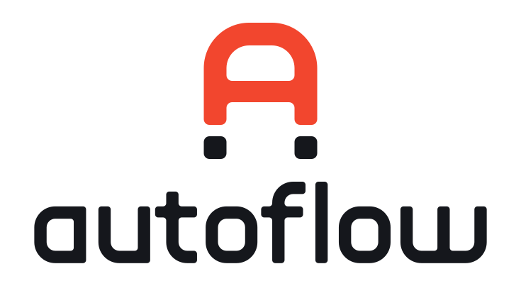
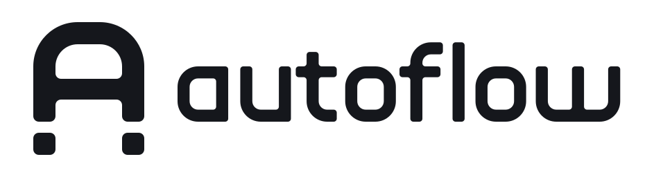
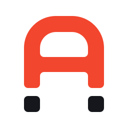
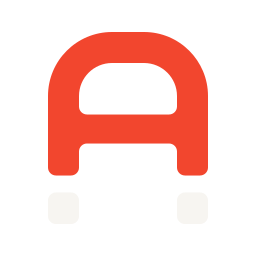
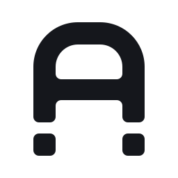
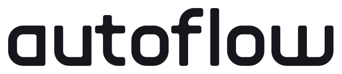

La A de Autoflow es un imán: el arco atrae, los polos sostienen. Lo que conectas, se queda conectado.
Retícula de 8 · trazo S = 32 · radios 2S / S · simetría vertical#F2462ERGB 242 70 46CMYK 0 85 85 0Pantone Warm Red CColor de marca. Cuerpo del imán, acentos, conectores.#15171CRGB 21 23 28CMYK 75 65 55 85Pantone Black 6 CPolos, wordmark, texto y fondos oscuros.#F7F5F1RGB 247 245 241CMYK 2 2 4 0Pantone —Fondo claro. Polos sobre fondo oscuro.#8B929CRGB 139 146 156CMYK 45 32 25 5Pantone Cool Gray 8 CTexto secundario, líneas, estados neutros.#FDE4DDRGB 253 228 221CMYK 0 12 10 0Pantone 489 CSuperficies suaves y fondos de destaque.






Deja libre alrededor del logo al menos la altura de un polo (S), que es ⅙ de la altura del símbolo. Los SVG maestros ya traen ese aire dentro (línea punteada): colócalos por su caja sin recortarla. El área crece con el logo; nunca es una medida fija.
Horizontal: 96 px de ancho. Símbolo: 16 px. Bajo 24 px usa siempre el corte chico (*-small-*, ícono icon-small): piernas más gruesas y corte más ancho, para que los polos no se peguen.

Wordmark dibujado a medida sobre la misma lógica del símbolo: esquinas concéntricas, terminales rectos. No se escribe con una fuente: usa siempre el archivo.
Para títulos y textos (es la tipografía de la UI de Figma y tiene licencia OFL). Si Inter no está disponible: Helvetica Neue o la fuente del sistema.